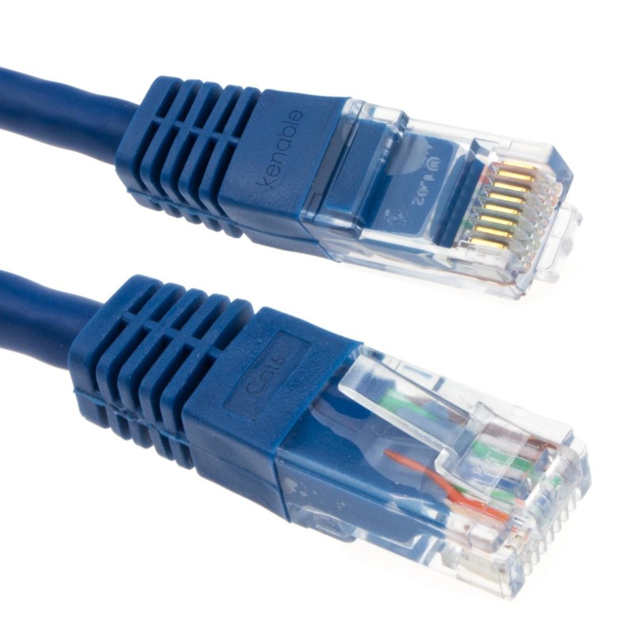
Měděný kabel (kroucená dvoulinka / RJ-45)
Optický kabel (světlovod)
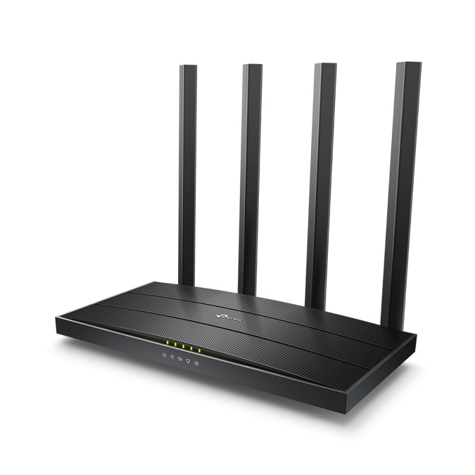
Router / AP
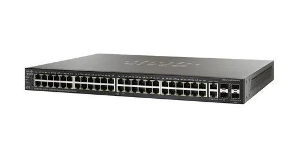
Switch
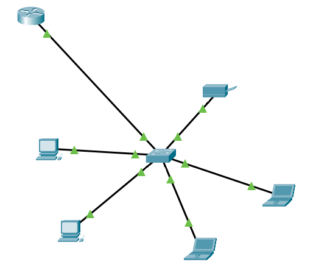
Síťová topologie
00:0a:95:9d:67:16).127.0.0.0/8, např. 127.0.0.1).1.1.1.110.0.0.0/8, 172.16.0.0/12, 192.168.0.0/162001:db8:1::ab9:C0A8:102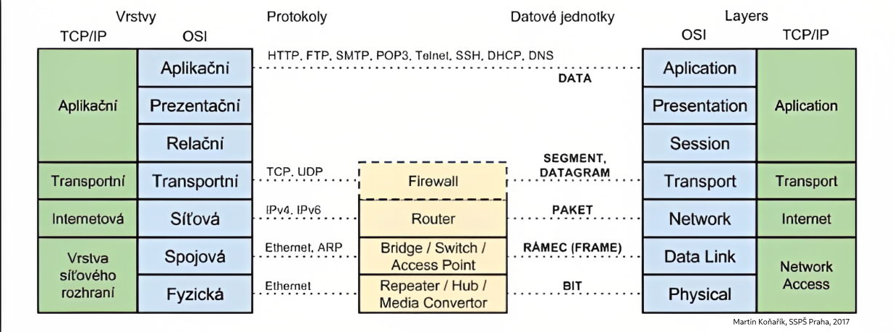
Logická adresa přidělená službě používající internet. Slouží ke směrování dat ke správné aplikaci.
20 FTP · 22 SSH · 23 Telnet · 25 SMTP · 53 DNS · 80 HTTP · 443 HTTPS
Pravidla, podle kterých probíhá přenos dat.
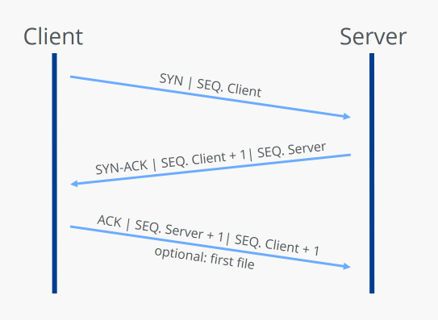
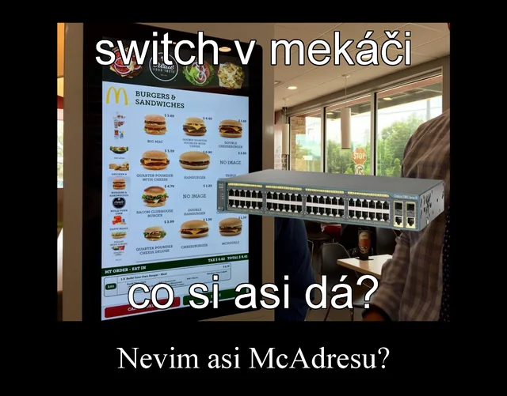
ip a ifconfig
ping traceroute
ip r arp
nslookup netstat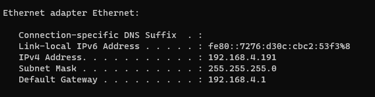
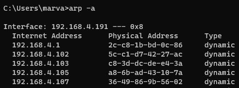
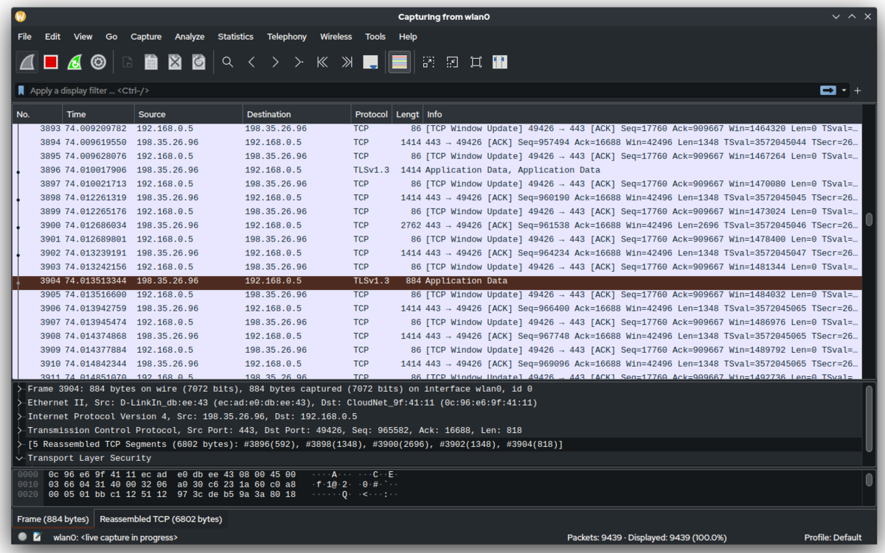
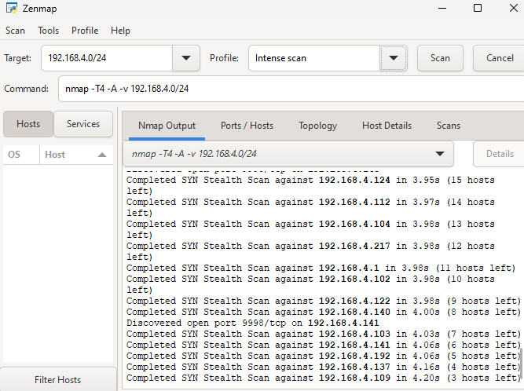
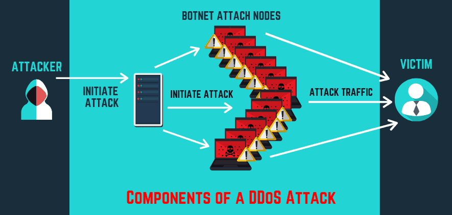
Man in the Middle (MitM): Útočník se vloží mezi dvě komunikující strany a může provoz odposlouchávat nebo upravovat.
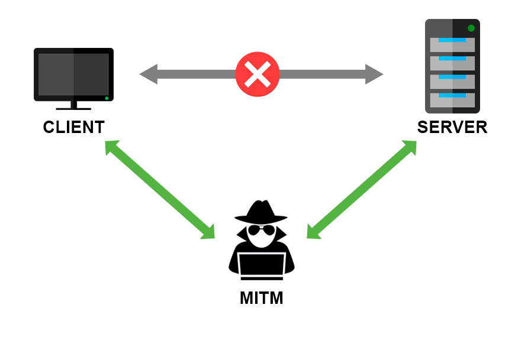
heslo' OR '1'='1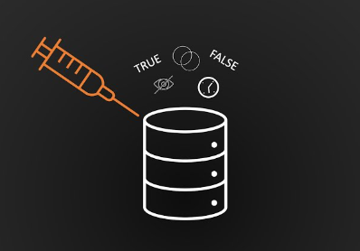
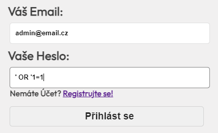
<script>alert('Toto je úspěšný XSS útok.');</script>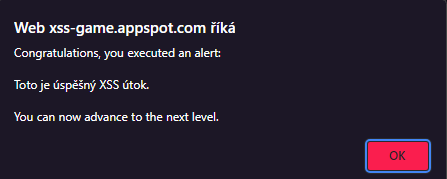
DNS spoofing: Úprava nebo podvržení DNS odpovědi, která uživatele přesměruje na falešnou stránku.
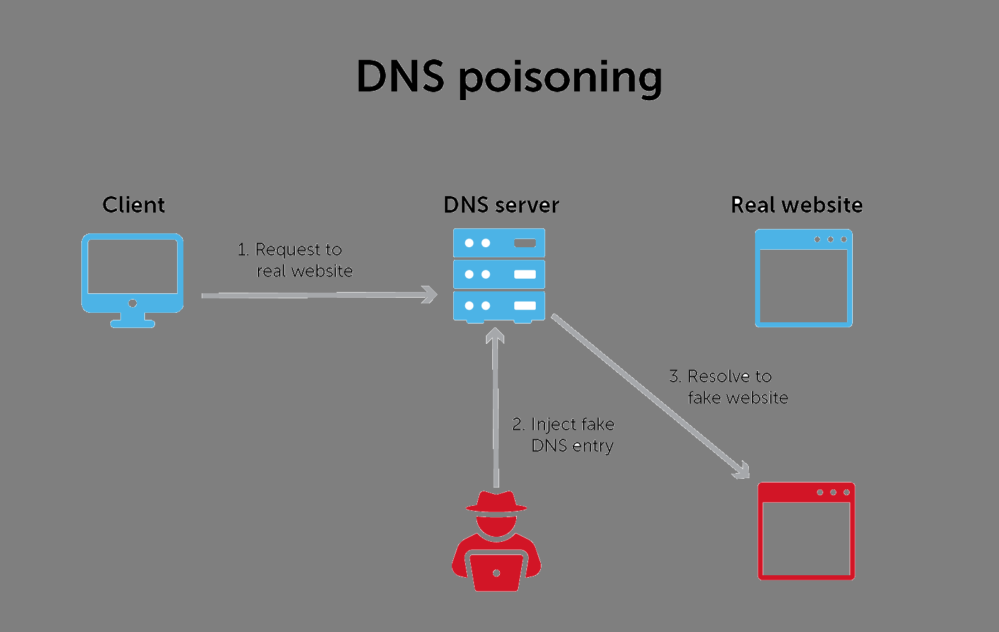
google.com → goggle.comdiscord.com → dlscord.comib.airbank.cz → ib.airbaпk.cz